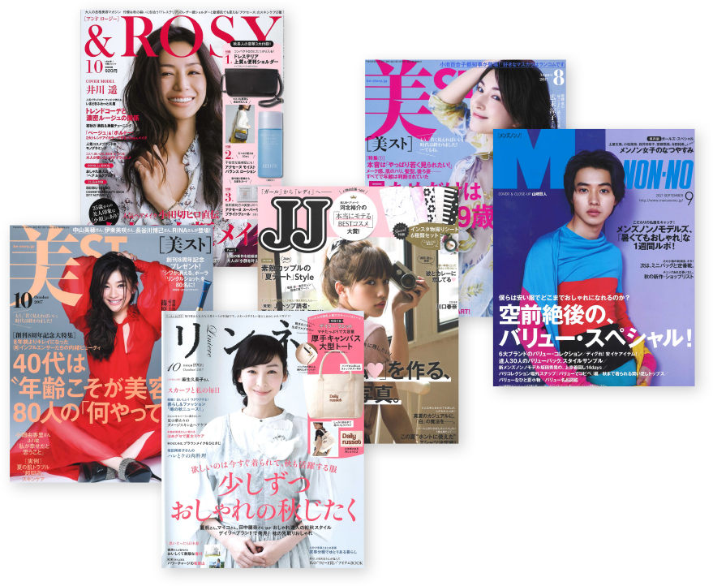
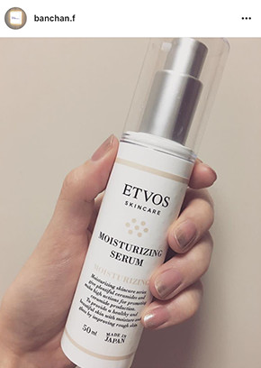
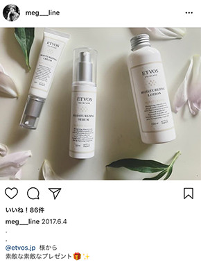
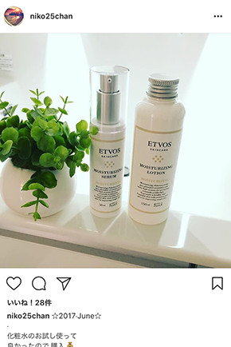
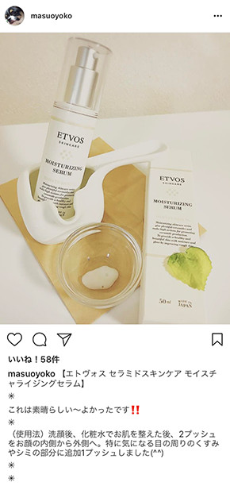

セット内容：クリアソープバー（洗顔せっけん）5g／モイスチャライジングローション（保湿化粧水）20ml／モイスチャライジングセラム（保湿美容液）10ml／モイスチャライジングクリーム（保湿クリーム）5g／薬用ホワイトニングクリアセラム（美白美容液）10ml [医薬部外品]




肌の細胞の隙間でスポンジのようにうるおいを抱え込む、それがセラミド。
セラミドが不足すると、隙間からうるおいが逃げて乾燥肌になったり、外側からの刺激に揺らぎやすい肌になってしまいます。


ヒト型セラミドが肌の層※の隙間を埋め、水分を抱えて逃さないみずみずしい肌に
※角層まで


代謝の衰えや乾燥が原因で、
40歳をすぎると肌のセラミドは激減。

不規則な生活で肌のターンオーバーが乱れ、
セラミドが失われる結果に。

セット内容：クリアソープバー（洗顔せっけん）5g／モイスチャライジングローション（保湿化粧水）20ml／モイスチャライジングセラム（保湿美容液）10ml／モイスチャライジングクリーム（保湿クリーム）5g／薬用ホワイトニングクリアセラム（美白美容液）10ml [医薬部外品]







セット内容：クリアソープバー（洗顔せっけん）5g／モイスチャライジングローション（保湿化粧水）20ml／モイスチャライジングセラム（保湿美容液）10ml／モイスチャライジングクリーム（保湿クリーム）5g／薬用ホワイトニングクリアセラム（美白美容液）10ml [医薬部外品]


ETVOSスキンケアシリーズの中でもっとも多くのセラミド(1, 2, 3, 5, 6Ⅱ）を配合
さらに人の肌にある構造と同じ「ラメラ構造」を採用することで肌なじみがよく、あっという間に肌に浸透※。うるおいが持続します。
※角層まで


セラミド以外にも、高保湿成分（ヒアルロン酸、天然保湿因子NMF）をたっぷり配合。

6種類の花のエキス※1や、植物性プラセンタエキス※2、スクワラン※3など、植物の力でしっとり柔らか肌へ。
（※1）ローマカミツレ花エキス、トウキンセンカ花エキス、ヤグルマギク花エキス、カミツレ花エキス、セイヨウオトギリソウ花/葉/茎エキス、フユボダイジュ花エキス（※2）アロエベラ葉エキス、クロレラエキス、クズ根エキス（※3） 保湿成分


美白有効成分のトラネキサム酸を配合
メラニンの生成を抑え、シミ・そばかすを防ぐ

セイヨウオオバコ種子エキスや梅果実エキスなどの保湿成分配合でくすみ※2にアプローチ
さらにイザヨイバラエキスやプルーン酵素分解物といった保湿成分もプラス

トラブルが出やすい敏感肌でも美白できるように
有効成分のグリチルレチン酸ステアリルや3種のヒト型セラミド※3を配合

さらりとしたテクスチャーで全顔に伸ばしやすい低刺激処方※5。敏感肌の方にもおすすめ。
※1 メラニンの生成を抑えシミ・そばかすを防ぐ ※2 乾燥やキメの乱れによるもの ※3 保湿成分：「N-ステアロイルジヒドロスフィンゴシン」「N-ステアロイルフィトスフィンゴシン」「ヒドロキシステアリルフィトスフィンゴシン」 ※4 角層まで ※5 パッチテスト済み（すべての方に肌トラブルが起こらないというわけではありません）


90日間じっくり熟成し、保湿成分をギュッと濃縮した透明枠ねり石けん。うるおいを守りながら、毛穴の汚れまですっきり落とします。


注目の保湿成分「Pos-Ca®※（ホスホリルオリゴ糖Ca）」がお肌のバリア機能をサポートし、すこやかに導きます。
※
江崎グリコ株式会社の登録商標です


美白有効成分のトラネキサム酸がシミやそばかすといった「点」を防ぐと同時にくすみ※1などの「面」もケアし、やさしい使用感で肌にぐんぐん浸透※2します。
※1 乾燥やキメの乱れによるもの ※2 角層まで


「ヒト型セラミド」をバランスよく配合した高保湿美容液。肌の奥※までうるおいで満たし、キメの整った透明感のあるすこやかな素肌に。
※角層まで


保湿成分をふんだんに配合したリッチな保湿クリーム。
油分が足りずカサつきがちなお肌も、ツヤのあるやわらかなお肌へ。


セット内容：クリアソープバー（洗顔せっけん）5g／モイスチャライジングローション（保湿化粧水）20ml／モイスチャライジングセラム（保湿美容液）10ml／モイスチャライジングクリーム（保湿クリーム）5g／薬用ホワイトニングクリアセラム（美白美容液）10ml [医薬部外品]
色々なアイテムを試しながらも、やっと出会えたのがETVOSの「モイスチャライジングセラム」。
このセラムは皮膚科学に基づいて専門家が開発しているそう。